Showcase Models
A showcase model is the data structure wrapped around a model file. The showcase model data structure holds all the necessary data for a displaying and connecting a model during runtime.Navigation
The regular way to edit a model is via the menu bar. Go to "Edit Showcase Model" and either select "Create Entity" or "Open Entity" to either create new showcase model or open an already existing one.

Create Model
To create a model just select "Edit Showcase Model" > "Create Entity". Enter a name and click "Create Model". MARBLE will open an empty model structure for you to configure.
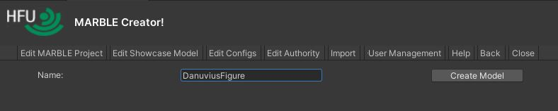
Open Model
To open a model, just select "Edit Showcase Model" > "Open Entity". In the following window, chose a model from the dropdown and click "Open Model".
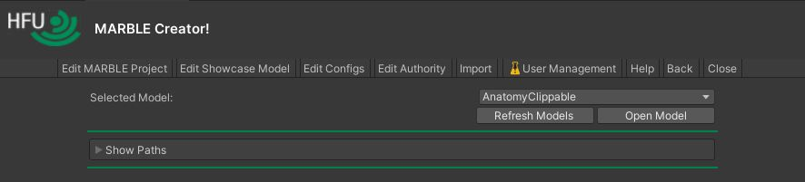 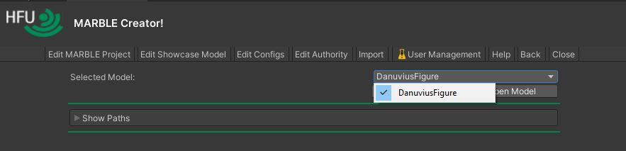
Edit Model
New and Empty Model
In the following image, you can see a newly opened and empty model. In the 3D area, you see the reference axis displaying 10cm and 1m. The scene graph has changed too. It displays the data structure of the model (see Model Structure). The work area displays all the necessary information and controls to load and integrate your models. The most important thing to do is add a base model.
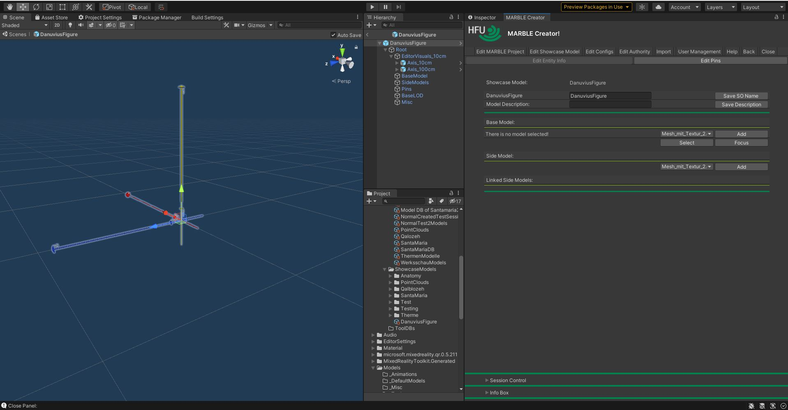
Add A Base Model
The base model is essential. It is always clippable and around the base model wraps the semi-transparent bounding box for model manipulation at runtime. You can only add it once, and then only replace it with another model. Chose an imported model from the dropdown and click "Add".
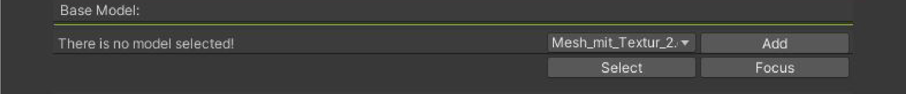
In the following image, you can see the added base model. You can also notice that the name in the "Base Model" section changed to the name of the model, and the "Add" button changed to a "Replace" button. You can and should mark the model as point cloud in case it is one (do not select "IsPointCloud?" if it is not. This will cause export problems).
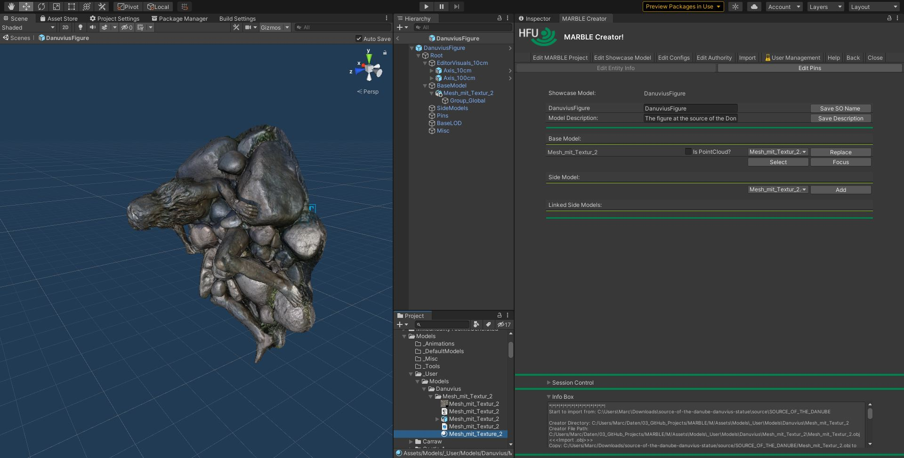
Side Models
Side models give you the possibility to add models which do not belong to the base model. You can add as many side models as you like, but should be aware that they add up to the total poly count. Side models can be configured to be clippable or not. Added side models will appear on the "Linked Side Models" section.
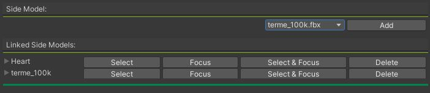
 This feature is experimental and may not work as expected.
This feature is experimental and may not work as expected.
 Adding two equal models as side models and configure one as clippable and the other not can cause unexpected behaviour when deployed to the devices. It is recommended not to over do it with this feature.
Adding two equal models as side models and configure one as clippable and the other not can cause unexpected behaviour when deployed to the devices. It is recommended not to over do it with this feature.
Transform Models
As you can see in the second image of Add A Base Model, the new model is rotated as it was saved by the creator. In order to arrange it to look properly in the clients, you should move, rotate and scale it accordingly. To do this you have to use Unity's translate, rotate and scale tools. On the upper left under the main toolbar you can see three icons for translation, rotation, and scale 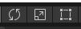. To transform a model, you first have to select it either in the scene graph or by clicking the button "Select" on the model in the Creator window.
 Beginners tip: use the axis tool 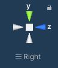 in the upper right corner of the work area to transform the model more easily. Click on the respective axis to see the model from the respective side. Click on "Persp" to switch to "Iso" which makes it easier to place the model to the origin. By clicking "Focus" in the work area of the Creator, you can frame the model. Click it until you completely frame the model.
Beginners tip: use the axis tool 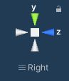 in the upper right corner of the work area to transform the model more easily. Click on the respective axis to see the model from the respective side. Click on "Persp" to switch to "Iso" which makes it easier to place the model to the origin. By clicking "Focus" in the work area of the Creator, you can frame the model. Click it until you completely frame the model.
 For scaling, orient yourself to the 10cm & 1m auxiliary axes.
For scaling, orient yourself to the 10cm & 1m auxiliary axes.
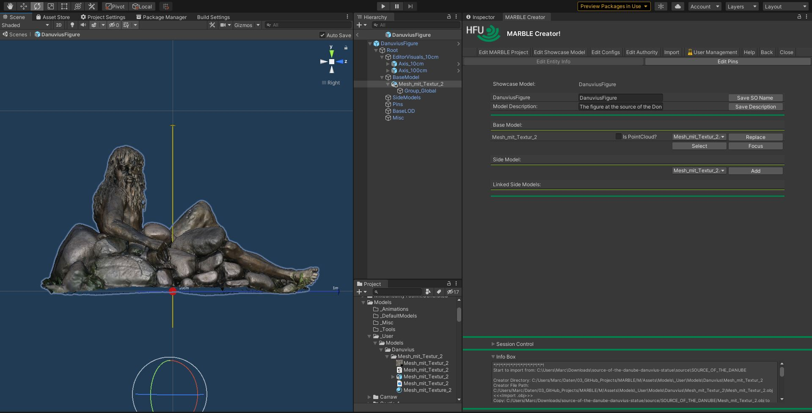
Model Structure
- EditorVisuals_10cm - ignore this container
- BaseModel - this container contains the main model. It is always clippable and needed in order to export it. There can only be one base model, but you can place several models and containers under a container under the "BaseModel" container (like Model/Root/BaseModel/BaseRoot/Model1 and Model/Root/BaseModel/BaseRoot/Model2).
- SideModels - in this container there can be various models. You can decide which one should be clippable. They do not count to the model itself, which means that they will be transformed according to the base model but not be wrapped around with the manipulation box to manipulate the model!
- Pins - contains all the "link" to more information or models.
- BaseLOD - deprecated
- Misc - everything which does not fit into the other containers will be moved to this container.